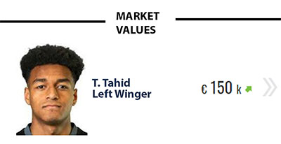
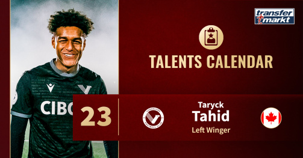

TJ Tahid: Meet the Vancouver FC wonderkid who models his game after Alexis SánchezNo matter where the career of Taryck Jordan Tahid will go from here, the 16-year-old will always be a part of Vancouver FC and Canadian Premier League history. Better known as TJ Tahid, the winger became the youngest player and scorer in CPL history this season. The 16-year-old winger made history by becoming the youngest player in Canadian Premier League history when made his debut in a 1-1 draw against Cavalry FC on May 7, 2023. Tahid also holds the record for the youngest goalscorer in Canadian Premier League history when he scored in Vancouver FC’s 3-6 defeat to British Columbia rivals Pacific FC on Jun. 3, 2023. |
|
 “My first season with VFC has been a tremendous experience,” Tahid said in an interview with Transfermarkt. “It involved many ups and downs, but overall, it was a great experience. I feel I was able to adapt very quickly to the professional lifestyle both on the field as well as develop mature habits off the field.” It would be indeed an understatement to call Tahid’s first season in professional football a success. After all, playing with fully grown men, Tahid managed three goals in 20 games for an expansion side that didn’t have exactly the easiest season in the CPL.New in the league, Vancouver FC finished 2023 second from bottom with 29 points from 28 games. The growing pains at Willoughby Community Park Stadium, located in Vancouver’s suburb of Langley were expected, however. In the history of North American sports, very few expansion sides have found instant success. After all, throwing together a group of players seldom guarantees chemistry. TJ Tahid: Vancouver FC wonderkid models his game after Alexis Sánchez Nonetheless, the emergence of another professional club in the greater Vancouver area next to the Major League Soccer club Vancouver Whitecaps has meant more opportunities for playing time for talented players like Tahid. The Eagles discovered Tahid at VanCity Pro Football Academy in May and quickly signed him to a professional contract. From there, it didn’t take long for the Maple Ridge, British Columbia native to show his tremendous talent. An Arsenal fan growing up, Tahid models his game after Chilean legend Alexis Sánchez. “I feel like some of my qualities include vision, intelligence of the game, leadership, passing, dribbling, and passion for the game,” Tahid said when asked about his strengths. “There is indeed no doubt that Tahid has the confidence to succeed in this business. That doesn’t mean, though, that the 16-year-old is cocky. In fact, the wonderkid quickly pointed out that he is only at the beginning when it comes to developing his game. “I'm still only 16 years old. I know there’s a lot more that I can learn and improve on, such as being more effective at pressing defenders and winning the ball.” |
|
 Vancouver FC fans, in fact, were treated to seeing a talent develop in front of their eyes. It felt like every game forward got better, more used to playing with fully-fledged professionals in the very physical Canadian Premier League. Although it is still a young league with its natural growing pains, the CPL is still a difficult-to-navigate competition for a young player. Rugged in nature, Canadians prefer a physical game, and then there are difficulties of travel in a league spanning the world’s second-largest country coast-to-coast—the distance from the most western club, Pacific FC (located in Victoria on Vancouver Island) to the Halifax-based HFX Wanderers is almost 6000km.Tahid: U17 World Cup "a privilege" and "proud moment" Tahid not only navigated those obstacles with flying colors, but he also excelled. Indeed, Canada Soccer also noticed Tahid’s progress and called up the 16-year-old to represent his country at the U17 World Cup in Indonesia this fall. Although Canada lost to Spain (0-2), Uzbekistan (0-3), and Mali (1-5), Tahid started in all three games and was just one of two CPL players representing his country at the tournament—the other was Forge FC’s Kevaughn Tavernier. “Representing my country is such a privilege and a very proud moment for me and my family,” Tahid, who also holds Ghanaian citizenship, said. “The experience at the World Cup has definitely improved me by giving me a taste of what high-pressure environments and games are like at the national level, and it provided affirmation of seeing how much work you need to always be putting in.” Indeed, playing against the very best at this age group highlighted some more elements he needed to improve about his game to Tahid. “Heading into my second professional season, one of my targets is to continue developing my weaker foot so I can become a more dynamic and threatening player,” Tahid said. Short-term Tahid is expected to play the 2024 season with Vancouver FC. But a player of his talent has already caught the attention of scouts in North America and beyond. Indeed, it might be only a matter of time before a bigger club tries to snatch the CPL’s biggest talent away from VFC. Indeed, Tahid seems to cherish that prospect. My goal is to end up playing at the highest level possible and dominating on that level. |